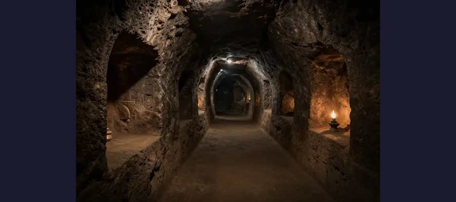
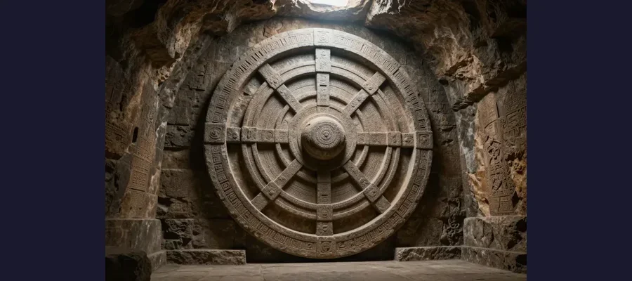

Derinkuyu Underground City: 20,000 People Lived Beneath Turkey!

Derinkuyu - an underground city stretching 18 levels deep into the earth!
In 1963, a man in central Turkey knocked down a wall in his home and made one of the most astonishing discoveries in archaeological history. Behind the wall was a hidden room — and beyond that room lay an entire underground city that could hold up to 20,000 people!
Welcome to Derinkuyu, the deepest underground city ever discovered. Carved into volcanic rock over thousands of years, this subterranean marvel had everything a civilization needed: homes, churches, storage rooms, wine presses, and even ventilation shafts.
Overview
A City Hidden in Stone
Derinkuyu is located in the Cappadocia region of Turkey, an area famous for its soft volcanic rock. People have been carving homes into this rock for millennia. But Derinkuyu was on a completely different scale!
The city extends 18 levels deep — roughly 280 feet (85 meters) below the surface. At its peak, it could shelter approximately 20,000 people along with their livestock and food supplies. The complex had over 600 entrances hidden across the landscape above.

Tunnels as narrow as 2 feet wide connected living quarters across 18 levels!
🏛️ Engineering Marvel
The ventilation shaft in Derinkuyu is over 180 feet deep and was designed so precisely that fresh air reached every level. Even modern engineers are impressed by the airflow design!
Evidence
A useful way to read this evidence is by confidence level. High-confidence points are independently confirmed by multiple sources; medium-confidence points are plausible but debated; low-confidence points stay provisional until stronger data appears.
Archaeological work on Derinkuyu Underground City is strongest when physical evidence, carbon dating, and historical documentation align. The layered approach helps separate verified facts from speculation.
Who Built It and Why?
Historians believe the earliest parts of Derinkuyu were carved by the Phrygians around the 8th century BCE, possibly even earlier by the Hittites. Over centuries, different civilizations expanded the complex.
The city was likely built as a refuge from invaders. Massive circular stone doors — weighing up to half a ton — could seal each level from the inside. Early Christians used these underground cities to hide from Roman persecution.
- 🏠 Living quarters for thousands of families
- 🍷 Wine and oil presses for food production
- ⛪ Churches and religious spaces
- 🏪 Storage rooms capable of holding months of supplies
Competing Explanations
Competing explanations usually persist because each one fits part of the evidence while missing another part. Researchers test these models against chronology, physical constraints, and independent documentation to identify which interpretation requires the fewest assumptions.
The Purpose Debate

The giant stone doors could only be opened from the inside - perfect defense!
While most archaeologists agree Derinkuyu served as a defensive refuge, some researchers propose additional theories. Some suggest it was primarily a climate shelter — staying cool in summer and warm in winter. Others believe it had religious significance, with underground spaces holding spiritual meaning for early inhabitants.
A more controversial theory suggests the city was connected to other underground settlements through miles of tunnels, creating a vast subterranean network across Cappadocia. Over 200 smaller underground cities have been found in the region, and some tunnels do connect them!
🌍 Still Being Explored
Only about half of Derinkuyu is open to the public. Archaeologists believe there could be even more levels below the currently excavated areas, and new chambers are still being discovered!
Open Questions
Open questions remain because source quality is uneven across time: some records are direct and detailed, while others are fragmentary or second-hand. Future archival discoveries, improved imaging, and more precise dating methods may refine conclusions without overturning well-supported core findings.
Mysteries Still Unsolved
Despite decades of study, Derinkuyu holds many secrets. Exactly how the ventilation system was designed so efficiently without modern engineering tools remains unclear. The massive stone doors were carved with precision that seems advanced for the era.
And perhaps the biggest question: how many more underground cities like Derinkuyu remain undiscovered beneath the Turkish landscape? Ground-penetrating radar has identified anomalous voids throughout Cappadocia that could be entire cities yet to be excavated.
Derinkuyu reminds us that ancient civilizations were capable of far more than we typically imagine!
📖 Recommended Reading
Want to learn more? Check out The Underground City of Derinkuyu: The History and Mystery of the Ancient Subterranean City in Turkey on Amazon for a deeper dive into this fascinating topic. (As an Amazon Associate, we earn from qualifying purchases.)
References & Further Reading
- Britannica overview of Derinkuyu Underground City
- History.com feature on Derinkuyu
- Archaeology Magazine report on Cappadocia underground cities
- Smithsonian Magazine deep dive into Derinkuyu
- Google Scholar literature search
Editorial note: reconstructions are continuously revised as imaging and inscription studies improve. See our Editorial Policy.